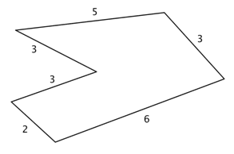

El perímetro y el área son dos elementos fundamentales en matemáticas. Para ayudarte a cuantificar el espacio físico y también para proveer las bases de matemáticas más avanzadas como en el álgebra, trigonometría, y cálculo. El perímetro es una medida de la distancia alrededor de una figura y el área nos da una idea de qué tanta superficie cubre dicha figura.
El conocimiento del área y el perímetro lo aplican muchas personas día con día, como los arquitectos, ingenieros, y diseñadores gráficos, y es muy útil también para la gente en general. Entender cuánto espacio tienes y aprender cómo conjuntar figuras te ayudará cuando pintas tu cuarto, compras una casa, remodelas la cocina, o construyes un escritorio.
El perímetro de una figura de dos dimensiones es la distancia alrededor de la figura. Puedes imaginar una cuerda siguiendo los lados de la figura. La longitud de la cuerda será el perímetro. O caminar alrededor de un parque, caminas la distancia del perímetro del parque. Algunas personas encuentran útil pensar “peri-metro” donde peri es “periferia” y metro es “medida”.
El área de una figura de dos dimensiones describe la cantidad de superficie que cubre la figura. Medimos el área en unidades cuadradas de un tamaño fijo. Ejemplos de unidades cuadradas son pulgadas cuadradas, centímetros cuadrados, o millas cuadradas. Cuando encontramos el área de un polígono, contamos cuántos cuadrados de cierto tamaño cubrirán la región dentro del polígono.